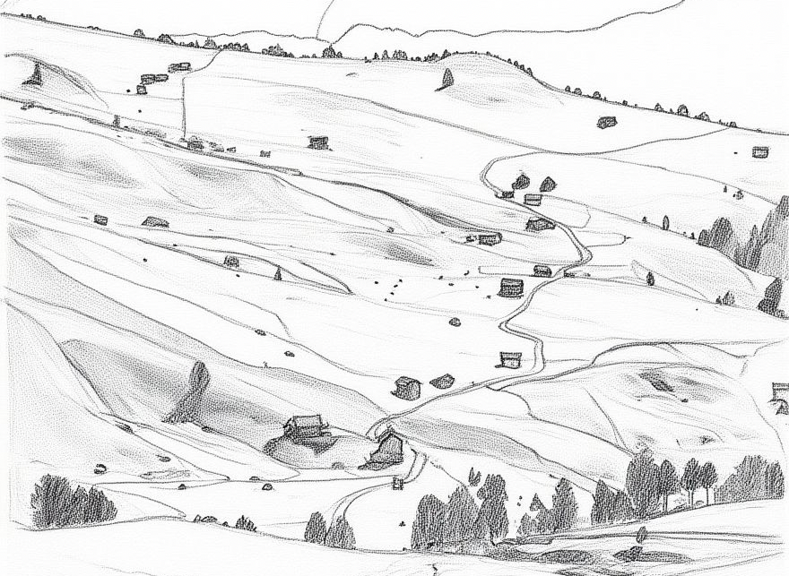

tinytrail is a lightweight R package that — once initialized — leaves a ‘tiny trail’ of human- and AI-readable information about what each script saves to disk, making it effortless to keep better track of small to medium-sized projects. It maintains a YAML trail file (_tinytrail.yaml) at the project root recording which scripts produced which output files and each script’s runtime. The tinytrail package also provides a convenience function that effortlessly registers column names along with sample values (optional) in the YAML.
Installation
# Development version from GitHub:
# install.packages("pak")
pak::pak("tinytrail-r/tinytrail")Usage
Place tinytrail() once near the top of each script and wrap save calls with tinytrail_write():
library(tinytrail)
library(ggplot2)
library(tinytable)
tinytrail(
description = "Summarise survey responses by age group",
data_source = "Current Population Survey (BLS)"
)
dat <- read.csv("data/raw/survey.csv")
# wrap the path with tinytrail_write() to register the output
ggplot(dat) +
aes(x = age, fill = response) +
geom_histogram() |>
ggsave(file = tinytrail_write("output/fig1.tex"))
# same for tables
lm(age ~ response, data = dat) |>
summary() |>
coef() |>
tt(digits = 3) |>
save_tt(file = tinytrail_write("output/tab1.tex"))tinytrail() automatically captures the file name and creates or updates _tinytrail.yaml:
scripts:
01_clean.R:
description: Summarise survey responses by age group
data_source: Current Population Survey (BLS)
first_run: '2026-06-27 09:00'
latest_run: '2026-06-27 09:01'
script_runtime: 0.2 min
n_outputs: 2
outputs:
- output/fig1.tex
- output/tab1.texFor write functions not in the built-in list, pass a list to extra_hooks with the function names and their file-path arguments:
tinytrail(
description = "Export results",
extra_hooks = list(
fn = c("readr::write_csv", "ggplot2::ggsave"),
arg = c("file", "filename")
)
)(These two functions are already captured automatically — they’re shown here for illustration only.)
Optionally, pipe data frames through tinytrail_dict() to capture column names and sample values:
# ... cleaning and preparing data ...
dat |>
tinytrail_dict()This adds a data dictionary entry to _tinytrail.yaml:
data_dictionary:
01_clean.R:
dat:
columns:
id: [1, 2, 3, 4, 5]
age: [34, 52, 28, 41, 37]
response: ['yes', 'no', 'yes', 'yes', 'no']tinytrail_write() is for when you want to track only a subset of the output
Perhaps you only need to track a limited set of outputs, then you can hook tinytrail_write() those outputs:
Since tinytrail_write() is just a thin wrapper
works as expected.
